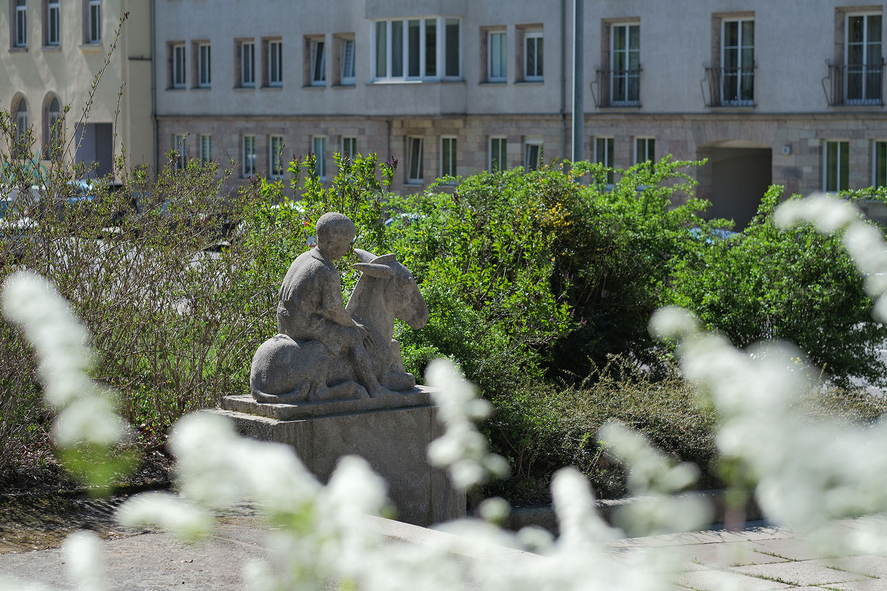
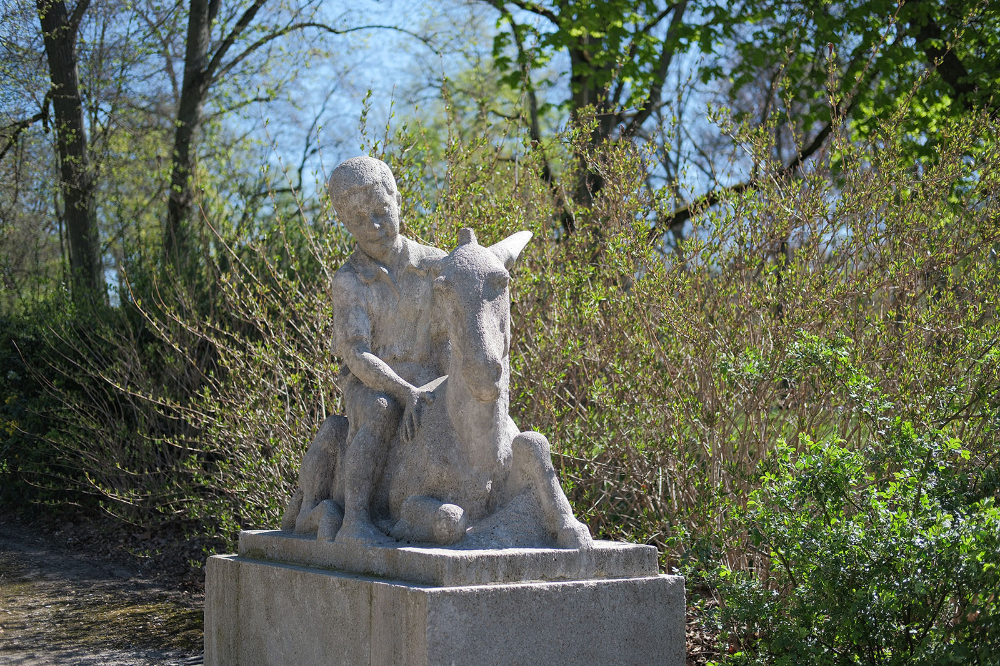
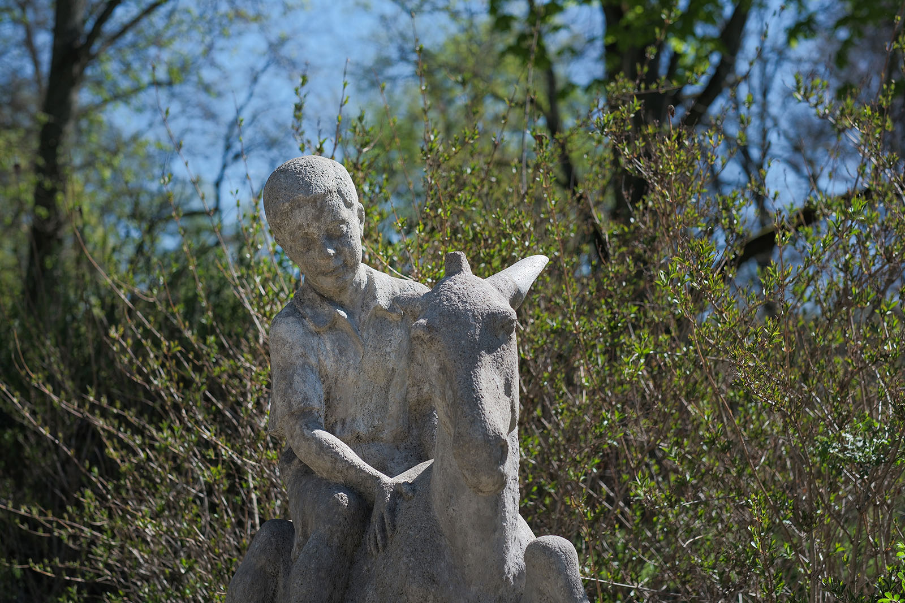
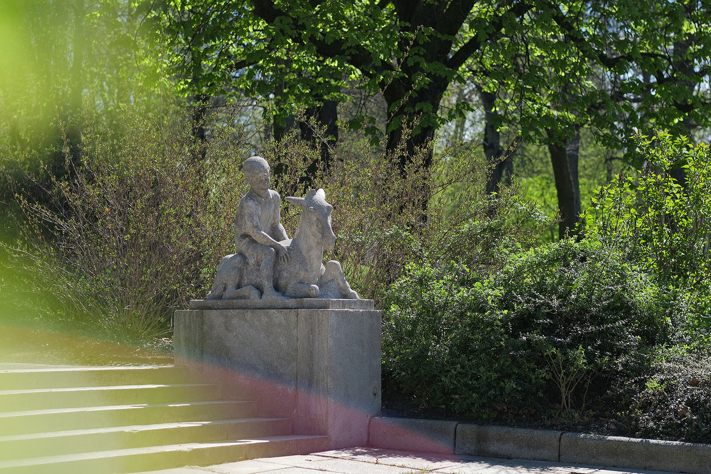

Recherche und Werkbeschreibung: Roman Pilz. Fotografien: Frank Krüger. Text und Bild wechseln sich wie in einem Magazin ab. Ein Klick auf ein Bild öffnet die Großansicht.
Die aus hellem, grauweißem Muschelkalk gehauene Skulptur zeigt einen annäherungsweise lebensgroßen Jungen, der auf einem Esel sitzt.
Emil Mund wurde 1884 in Berlin geboren und verstarb 1954 in Karl-Marx-Stadt (Chemnitz). Mund lernte wohl ab 1900 in einem Bildhaueratelier in Leipzig sein Handwerk. Ab 1924 war er in Chemnitz ansässig.
Der Künstler schuf Plastiken für repräsentative Bauten in Leipzig und in anderen Städten Deutschlands sowie Porträts und Denkmäler aus Metall und Stein. Büsten der Künstler Otto Theodor Wolfgang Stein (vor 1928) und Alfred Kunze (1936) befinden sich in den Kunstsammlungen Chemnitz. Er gestaltete auch einen Schöpfbrunnen für das Chemnitzer Stadtbad, der später verschollen ging, und ein Wandrelief für den Brunnen im Foyer des AOK Gebäude an der Müllerstraße.
Das Kriegerdenkmal für die Gefallenen des 1. Weltkrieges an der Stadtkirche in Burgstädt sowie das Grabmal der Illustratorin Gertrud Caspari in Dresden gehören zu seinen bekannten Werken. Der Künstler war früh mit der anthroposophischen Bewegung um Rudolf Steiner verbunden.
Er war in den 1930er Jahren in der Chemnitzer Kunsthütte engagiert und wird 1933 zusammen mit Alfred Kunze als Kunstwart in den Vorstand gewählt. Er wirkte auch als Lehrer und Förderer unter anderem von Elly-Viola Nahmmacher.
Der Junge ist mit einem kurzen sommerlichen Hemd und einer kurzen Hose gekleidet. Er sitzt barfuß auf dem liegenden Reittier und hält seine Hände nah am Kopf des Tieres. Der Junge lächelt sanft und folgt mit Kopf und Blick der nach rechts gewendeten Haltung des Esels. Der Esel hat seine Ohren auffällig nach hinten gelegt – möglicherweise ein Zeichen für Unwillen und Angst.

Das Lächeln des Jungen erscheint in diesem Kontrast besonders spitzbübisch. Der linke, vordere Huf scheint zum Aufstehen gerichtet, doch der Kopf mit der markanten, bürstenartigen Stehmähne ist eher nach hinten gerichtet.

Möglicherweise thematisiert das Bildwerk auf subtile Weise die sprichwörtliche Sturheit des Lastentieres und die spielerische Hartnäckigkeit der Jugend.

